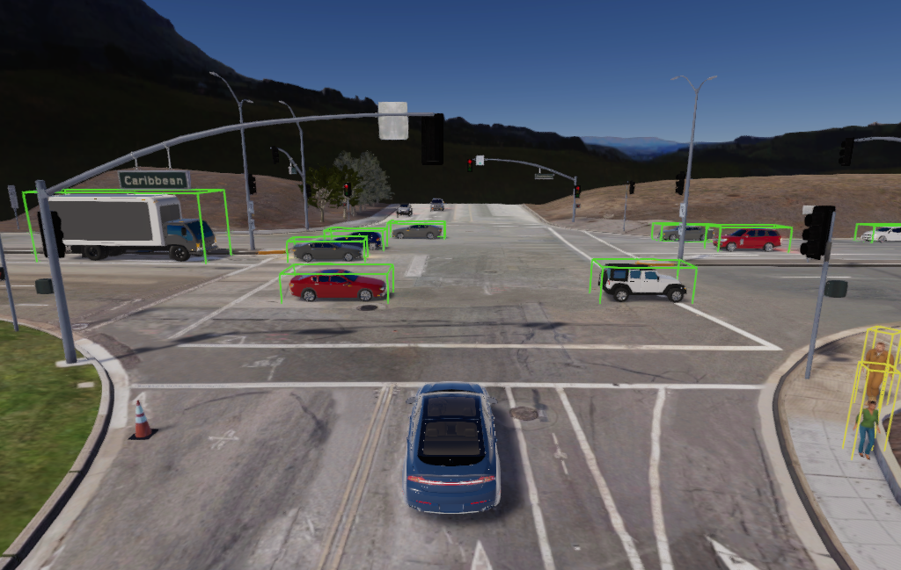
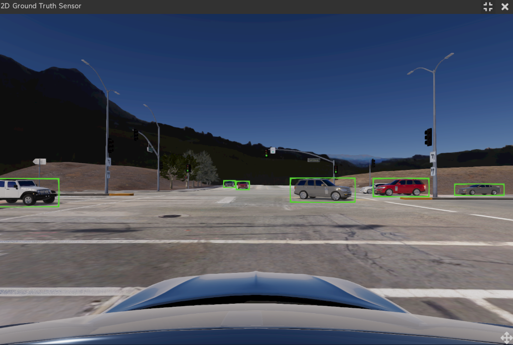
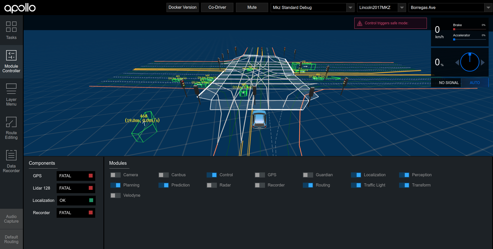
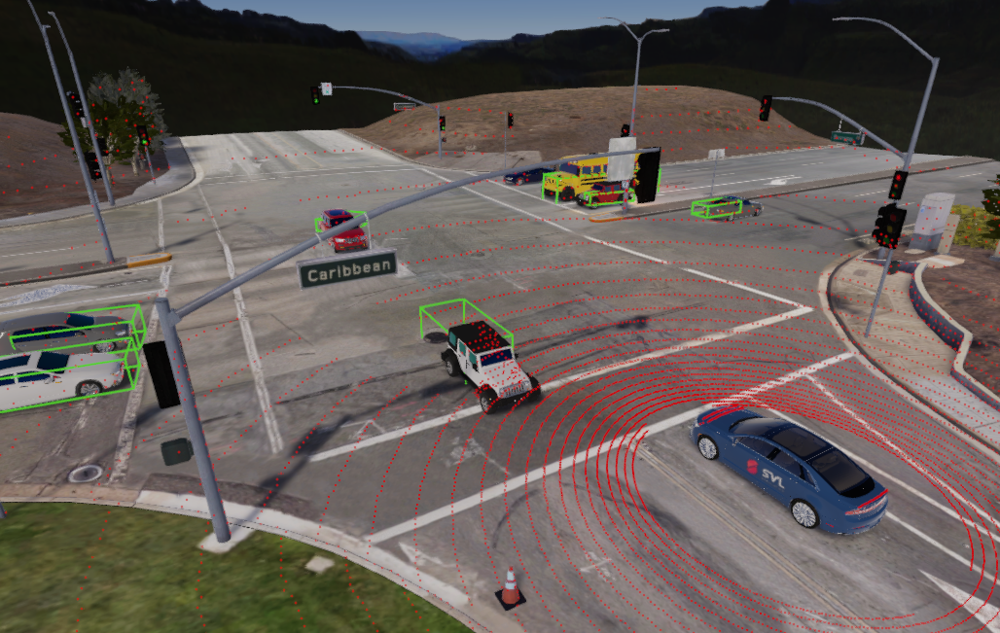

Ground Truth Obstacles#
You can use the SVL Simulator to view, publish, and compare ground truth obstacle information. The simulator allows visualization of 2D or 3D bounding boxes of vehicles and pedestrians, and publishes detailed information about the ground truth obstacles.
Sensor Configuration for Ground Truth Sensors top#
[
{
"type": "PerceptionSensor3D",
"name": "3D Ground Truth Sensor",
"params": {
"Topic": "/simulator/ground_truth/3d_detections"
},
"transform": {
"x": 0,
"y": 1.96,
"z": 1.0510799,
"pitch": 0,
"roll": 0,
"yaw": 0
}
},
{
"type": "PerceptionSensor2D",
"name": "2D Ground Truth Sensor",
"params": {
"Topic": "/simulator/ground_truth/2d_detections"
},
"transform": {
"x": 0,
"y": 1.348,
"z": 1.219,
"pitch": 0,
"roll": 0,
"yaw": 0
}
},
{
"type": "KeyboardControlSensor",
"name": "Keyboard Control Sensor"
}
]
View Ground Truth Obstacles in Simulator top#
Ground truth obstacles for vehicles and pedestrians can be visualized in the simulator with both 3D bounding boxes and 2D bounding boxes.
To view 3D Bounding boxes in the simulator:
- Launch SVL simulator and click the
Open Browserbutton - Create a sensor configuration with
ROSbridge and the sensors listed above on your desired vehicle - Create a simulation:
- Set
Random Trafficmode - Set your desired map (e.g.,
BorregasAve) - Set your desried vehicle (e.g.,
Lincoln2017MKZ) with the sensor configuration created above - Enable
Random TrafficandRandom Pedestrians
- Set
- Run simulation
- Enable visualization for
3D Ground Truth Sensorinside the simulator
You should see 3D bounding boxes highlighting NPC vehicles and pedestrians in the simulator main view.

To view 2D bounding boxes:
- Follow the steps listed above
- Enable visualization for
2D Ground Truth Sensorinside the simulator
You should see 2D bounding boxes highlighting NPC vehicles and pedestrians in the camera view.

Bounding Box Colors top#
- Green: Vehicles
- Yellow: Pedestrians
Subscribe to Ground Truth ROS Messages top#
SVL Simulator also publishes custom ROS messages describing the ground truth data of non-ego vehicles.
In order to subscribe to the ground truth messages, you will need the ROS package lgsvl_msgs. It contains custom ROS message types for 2D and 3D bounding boxes. You will also need to be running rosbridge.
Install the lgsvl_msgs ROS Package#
- Clone
lgsvl_msgsto your ROS workspace ormsgsdirectory:
$ git clone https://github.com/lgsvl/lgsvl_msgs {MY_ROS_WS}
- Build the ROS workspace:
$ catkin_make
ROS Topics and Message Types for Ground Truth Messages top#
- Ground Truth 2D messages
- Topic: /simulator/ground_truth/2d_detections
- Message type: lgsvl_msgs/Detection2DArray: Link
- Ground Truth 3D messages
- Topic: /simulator/ground_truth/3d_detections
- Message type: lgsvl_msgs/Detection3DArray: Link
View Object Detections from Apollo in SVL Simulator top#
If you are running Apollo with SVL Simulator, you can also visualize object detection outputs from Apollo in the simulator using the Apollo Perception Visualizer 3D Sensor. Make sure that the Apollo perception module is running and detecting obstacles in Dreamview as below:

To view object detections from Apollo:
- Launch SVL simulator and click the
Open Browserbutton - Add the
Apollo Perception Visualizer 3D Sensorinto your Apollo sensor configuration with theCyberRTbridge- Set sensor topic as
/apollo/perception/obstacles
- Set sensor topic as
- Create a simulation:
- Set
Random Trafficmode - Set your desired map (e.g.,
BorregasAve) - Set your desried vehicle (e.g.,
Lincoln2017MKZ) with the sensor configuration created above - Enable
Random TrafficandRandom Pedestrians
- Set
- Run simulation
- Enable visualization for the
Apollo Perception Visualizer 3D Sensorinside the simulator
You should see 3D bounding boxes highlighting Apollo LiDAR detections in the simulator main view.
